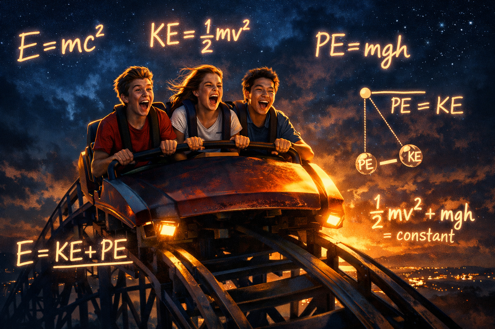
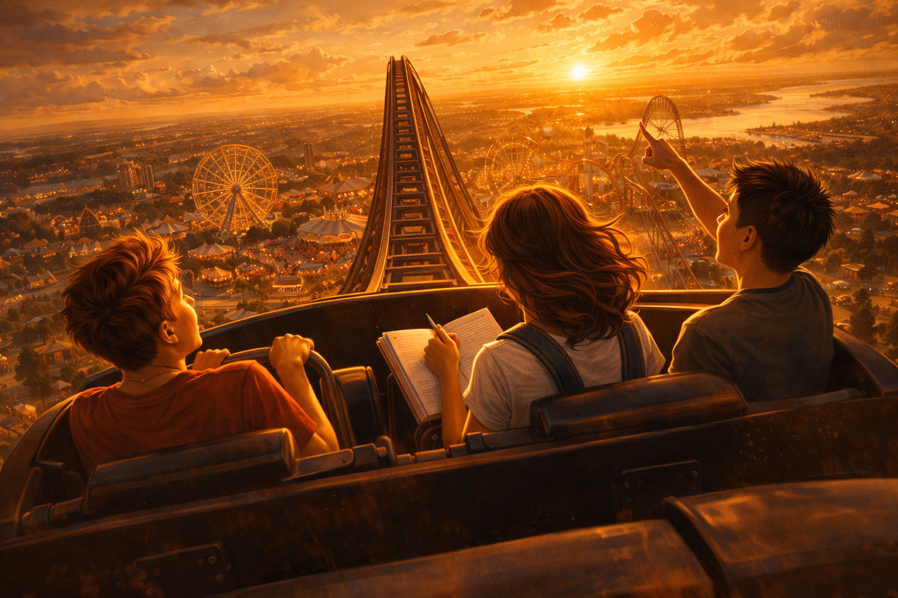
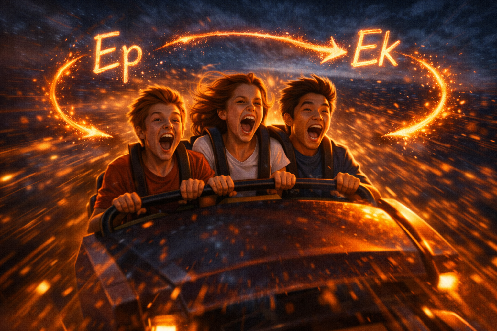
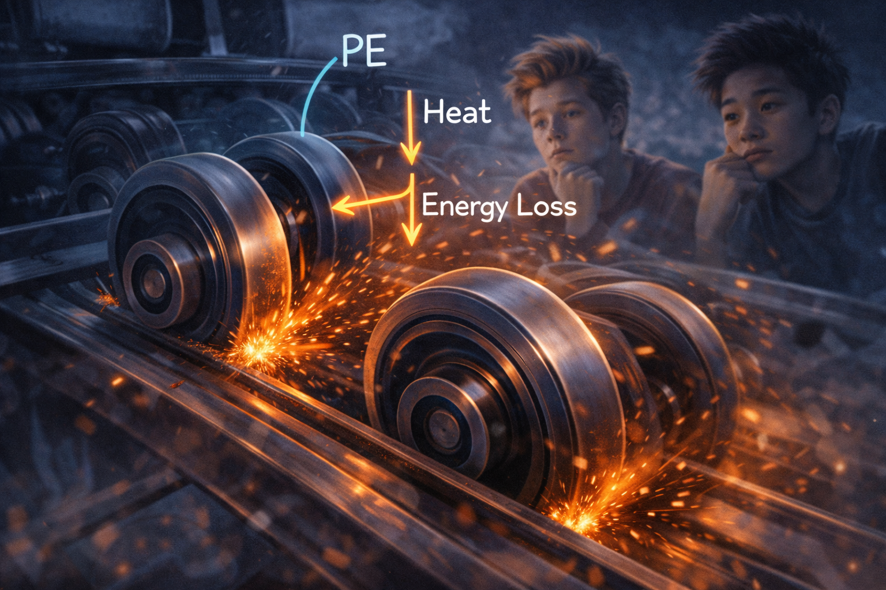
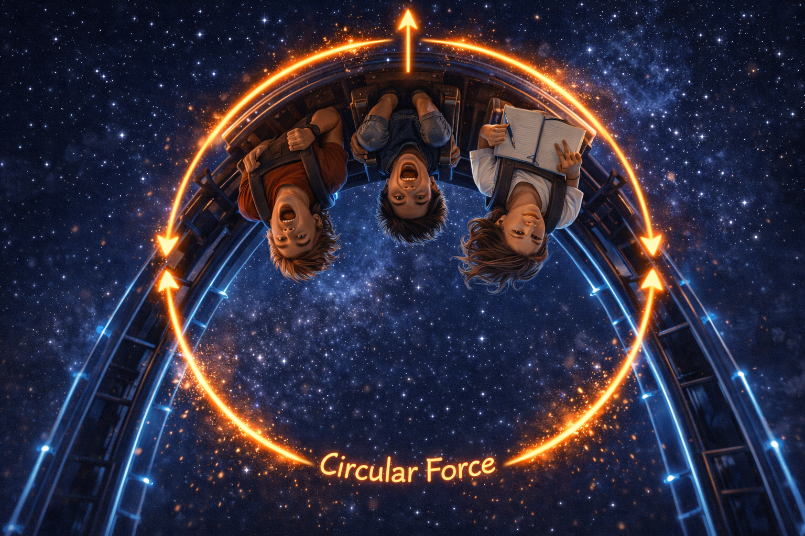

Tres estudiantes, una tarea, una montaña rusa y más adrenalina de la que cualquier libro de texto podría prometer.
H
Prof. Hayzar · Física & Matemáticas
medium.com · github.com/fisicohayzar
SIGUE LEYENDO

Física en las alturas
Era un viernes por la mañana cuando el profesor escribió en el tablero, con su letra inconfundible de físico apasionado: "Tarea: vayan a un parque de diversiones y escríbanme un ensayo vivido sobre trabajo, energía y conservación. Quiero sentir la montaña rusa en cada párrafo." El silencio duró exactamente tres segundos. Luego, Tomás levantó la mano.
T
Tomás — el despistado entusiasta
Profe… ¿podemos ir al parque y comer algodón de azúcar? ¿Eso también cuenta para el ensayo?
S
Sofía — la disciplinada
Tomás, el algodón de azúcar no tiene energía potencial gravitatoria. Solo calorías.
A
Andrés — el perspicaz
*mirando al techo* En realidad sí tiene energía química… pero mejor no digamos eso todavía.
Y así fue como Sofía, Andrés y Tomás llegaron un sábado al Parque del Caribe, con sus libretas, sus celulares, y Tomás con un sombrero que decía "SCIENTIST" que él mismo había recortado de cartulina porque le pareció "más auténtico que los de física".
⬥
Primer acto: La subida — donde nace la energía potencial

La subida — donde nace la energía potencial
La montaña rusa comenzó su lento ascenso. El motor eléctrico de la cadena arrastraba el vagón colina arriba mientras los tres amigos, sentados en fila, anotaban y debatían con más intensidad que miedo.
S
Sofía
¡Aquí! ¡Esto es trabajo! El motor está ejerciendo una fuerza sobre el vagón y lo desplaza hacia arriba, en la misma dirección que la fuerza. W = F · d · cos(θ). Como θ = 0°, el coseno vale 1. Trabajo positivo, máximo.
T
Tomás
Yo también estoy haciendo trabajo. Estoy apretando la barra con tanta fuerza que me van a salir callos.
A
Andrés
Ahí está el truco, Tomás: si tus manos aprietan pero la barra no se mueve, el desplazamiento es cero. W = F · 0 = 0 julios. Estás ejerciendo fuerza pero no haces trabajo físico.
T
Tomás
¿Cómo que no hago trabajo?! ¡Me estoy esforzando un montón! ¡Siento que voy a volar!
S
Sofía
*sin levantar los ojos de la libreta* En física, "esfuerzo" y "trabajo" no son sinónimos, Tomás. Bienvenido a la ciencia.
📐 Definición — Trabajo Mecánico
W = F · d · cos(θ)
W: trabajo [J = N·m] | F: fuerza aplicada [N] | d: desplazamiento [m] | θ: ángulo entre F y d Caso especial: Si F ⊥ d → θ = 90° → cos(90°) = 0 → W = 0 (¡como sujetar la barra!)
El vagón alcanzó la cima. Desde allí, a unos 35 metros de altura, el parque entero se veía como un mapa en miniatura. Tomás perdió la libreta.
T
Tomás
¡¡SE ME FUE LA LIBRETA!! ¡¡VA A CAER SOBRE ALGUIEN!!
A
Andrés
Tranquilo. Acaba de adquirir energía potencial gravitatoria. Ep = mgh. Si pesa unos 200 gramos y estamos a 35 metros… tiene como 68 joules. Va a llegar al suelo con bastante energía cinética. Espero que no haya nadie abajo.
S
Sofía
*anotando en su libreta, perfectamente a salvo* Excelente observación involuntaria, Tomás. Tu libreta acaba de ilustrar la energía potencial en tiempo real.
💡 Para recordar: La energía potencial gravitatoria no depende del camino que recorres para llegar a esa altura, solo depende de la altura misma. Si subes en zigzag o en línea recta, si estás en la cima de la montaña rusa, un edificio o un árbol: Ep = mgh. El universo no cobra extra por el camino más largo.
⬥
Segundo acto: La caída — la energía que se transforma

La caída — la energía que se transforma
Entonces llegó el momento. La cadena soltó el vagón. El mundo desapareció por un instante.
T
Tomás
¡¡¡AAAAAAAAHHHHH!!! ¡¡¡MIS INTESTINOS SE QUEDARON ARRIBA!!!
A
Andrés
*con los ojos abiertos como platos, pero gritando las palabras* ¡La energía potencial se convierte en cinética! ¡La velocidad aumenta! ¡Ep baja, Ek sube! ¡¡CONSERVACIÓN!!
S
Sofía
*con su lápiz en la mano, pálida como el papel, pero anotando de todas formas* E… energía… total… constante… mgh₁ + ½mv₁² = mgh₂ + ½mv₂²… anoté… bien.
La caída duró apenas unos segundos, pero fue suficiente para que los tres entendieran algo que ningún libro puede del todo transmitir: la energía no desaparece, se transforma. Lo que el motor invirtió pacientemente subiendo el vagón metro a metro, la gravedad lo devolvió en forma de velocidad, viento, y en el caso de Tomás, en forma de un grito que el parque entero escuchó.
⚡ Transformación de energía en la montaña rusa
⚖️ Principio de Conservación de la Energía Mecánica
mgh₁ + ½mv₁² = mgh₂ + ½mv₂²
Si no hay fricción ni otras fuerzas disipativas, la energía mecánica total (Ep + Ek) permanece constante en todo punto de la trayectoria. En la cima: v ≈ 0 → casi toda la energía es potencial. En el valle: h ≈ 0 → casi toda la energía es cinética.
⬥
Tercer acto: ¿Por qué el vagón no sube igual de alto la segunda vez?

¿Por qué el vagón no sube igual de alto la segunda vez?
Mientras esperaban para la segunda vuelta (Tomás quería "otra oportunidad para pensar, no para gritar"), Andrés señaló algo que Sofía ya había anotado.
A
Andrés
Noten que la segunda colina es más baja que la primera. ¿Por qué creen que es así?
T
Tomás
¿Para que no nos mareemos más?
S
Sofía
No. Es porque en el mundo real existe la fricción. Las ruedas contra los rieles, la resistencia del aire… esas fuerzas hacen trabajo negativo: restan energía mecánica útil y la convierten en calor. La energía total se conserva —incluyendo el calor— pero la energía mecánica disminuye.
T
Tomás
O sea que si no hubiera fricción, ¿el vagón subiría igual de alto para siempre?
A
Andrés
Exactamente. En un sistema ideal sin fricción, si la primera cima tiene 35 m, el vagón llegaría siempre a 35 m. Pero en la realidad, cada colina tiene que ser más baja, o el motor tiene que añadir energía de nuevo. Por eso las montañas rusas tienen ese perfil descendente.
T
Tomás
Esto es como mi vida. Cada vez que intento algo, la fricción de los problemas me quita energía… *pausa dramática* Voy a comerme el algodón de azúcar para recuperar energía química.
S
Sofía
*suspira* Eso es la termodinámica, Tomás. Otro capítulo.
🎢 Dato curioso del parque
En una montaña rusa real, hasta un 30–40% de la energía mecánica inicial se pierde en fricción antes de que el vagón complete el recorrido. Por eso los diseñadores calculan cuidadosamente cada curva, cada pendiente y cada radio de curvatura. La física no es decoración del diseño: es el diseño.
⬥
Cuarto acto: El loop — cuando la física te salva literalmente la vida

El loop — cuando la física te salva literalmente la vida
La montaña rusa tenía un loop vertical. Tomás lo vio y se detuvo en seco.
T
Tomás
Momento. Momento. ¿Vamos a estar boca abajo? ¿No nos vamos a caer?
A
Andrés
Ahí entra la física otra vez. En la cima del loop, necesitas velocidad mínima para que la fuerza centrípeta supere la gravedad. Si el vagón tiene suficiente velocidad, la normal del riel empuja hacia adentro del círculo y no caes. La condición mínima es v = √(gR), donde R es el radio del loop.
T
Tomás
¿Y si no tiene esa velocidad mínima?
S
Sofía
No habría montaña rusa. Los ingenieros calculan exactamente la altura de entrada necesaria para garantizar que en la cima del loop la velocidad sea siempre mayor que esa mínima. Si la primera colina no fuera lo suficientemente alta, el vagón simplemente no llegaría con suficiente energía cinética a la cima del loop.
T
Tomás
O sea… ¿la primera colina alta es para darnos energía suficiente para sobrevivir el loop?
A
Andrés
Exactamente, Tomás. La primera colina es la "batería" de todo el recorrido. La energía potencial de ese punto inicial es el presupuesto de energía que el vagón tiene para gastar durante todo el trayecto. Y los ingenieros no pueden equivocarse.
T
Tomás
*mirando el loop con renovado respeto* Entonces… la física me está salvando la vida ahora mismo.
S
Sofía
Siempre lo ha hecho, Tomás. Tú solo no lo sabías.
🔄 Velocidad mínima en la cima del loop
v_min = √(g · R)
g = 9.8 m/s² (aceleración gravitacional) | R = radio del loop [m]
Si R = 10 m → v_min = √(9.8 × 10) ≈ 9.9 m/s ≈ 35.6 km/h Por debajo de esta velocidad en la cima, el vagón no completaría el loop. Los diseñadores añaden un margen de seguridad amplio.
⬥
Epílogo: El ensayo que Tomás escribió esa noche
Esa noche, los tres se sentaron en una cafetería cercana con sus notas, sus fotos y el recibo del algodón de azúcar (que Tomás insistió en archivar "como evidencia de transferencia de energía química a biológica"). Sofía ya tenía su ensayo casi terminado, estructurado con ecuaciones y diagramas. Andrés esbozaba un modelo computacional de la montaña rusa en su cuaderno. Y Tomás...
T
Tomás — fragmento de su ensayo (leído en voz alta)
"…Hoy entendí que la energía no se crea ni se destruye, solo se transforma. Como cuando tengo miedo antes de una caída: ese miedo se convierte en grito, el grito en risa, y la risa en el recuerdo que me va a durar para siempre. Quizás la conservación de la energía también aplica a las emociones. Pregunten a un físico."
A
Andrés
*pausa larga* No está mal, Tomás. No está mal.
S
Sofía
*guarda su libreta y sonríe por primera vez en el día* Eso lo pones en la conclusión. Y sí: las emociones no son exactamente energía mecánica, pero la metáfora vale.
La gran lección del día: La física no está en los libros esperando que vayas a buscarla. Está en cada caída, en cada curva, en cada momento en que la velocidad te quita el aliento. Cuando entiendes la energía, el mundo deja de ser un escenario pasivo y se convierte en un laboratorio permanente. Lo único que necesitas es saber qué preguntas hacerle.
¿Entendiste el paseo?
Responde estas preguntas para verificar que la física se quedó contigo, no solo el vértigo.
PREGUNTA 01
El motor eléctrico arrastra el vagón desde el suelo hasta la cima de 35 m. Si el vagón tiene una masa de 800 kg, ¿cuánta energía potencial gravitatoria almacena en ese punto? (Usa g = 9.8 m/s²)
Cálculo
PREGUNTA 02
Tomás aprieta la barra de seguridad con una fuerza de 200 N durante toda la subida, pero la barra no se mueve. ¿Cuánto trabajo físico realiza Tomás sobre la barra? Explica tu respuesta usando la definición de trabajo.
Concepto
PREGUNTA 03
En la cima, el vagón tiene velocidad casi cero. Al llegar al punto más bajo de la primera caída (h ≈ 0), ¿qué velocidad tendría el vagón si no existiera fricción? Usa la conservación de energía mecánica. Masa del vagón: 800 kg.
Cálculo
PREGUNTA 04
La segunda colina de la montaña rusa mide solo 28 m. ¿Por qué no mide también 35 m? ¿Qué le ocurrió a la energía que "falta"? ¿Se destruyó? Explica usando el principio de conservación de la energía.
Concepto
PREGUNTA 05
El loop vertical tiene un radio de 8 metros. ¿Cuál es la velocidad mínima que debe tener el vagón en la cima del loop para no perder contacto con el riel? ¿Qué fuerza garantiza que esto ocurra?
Cálculo
PREGUNTA 06
Sofía dice: "La energía potencial no depende del camino". Andrés propone subir al vagón tomando una escalera en zigzag en lugar de la rampa directa. ¿Cambiaría la energía potencial almacenada en la cima? Justifica.
Reflexión
PREGUNTA 07
Imagina que eres ingeniero(a) de parques de diversiones. Quieres diseñar una montaña rusa con un loop de radio 12 m. ¿A qué altura mínima debe estar la primera colina para garantizar que el vagón complete el loop con seguridad? Detalla tu razonamiento.
Contexto
PREGUNTA 08
Tomás escribe en su ensayo que las emociones también se "conservan y transforman". ¿Es esto una analogía válida con la conservación de energía? ¿En qué se parece y en qué se diferencia del principio físico? (Pregunta abierta: argumenta tu posición.)